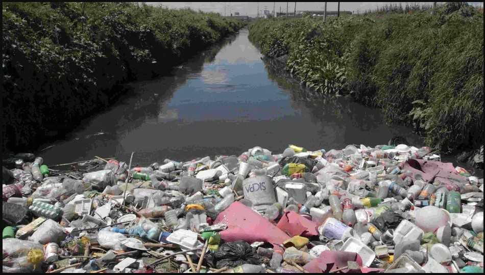
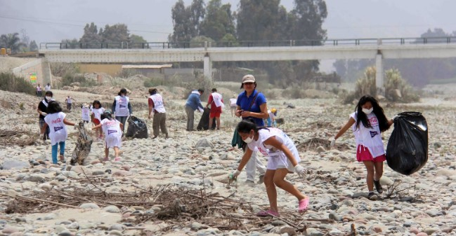

La contaminación del Río Lerma es uno de los principales problemas ambientales en Salamanca. Este proyecto busca fomentar conciencia sobre su impacto y tomar medidas concretas para reducirla.

Sobre el Proyecto
Objetivo General: Reducir la contaminación del río Lerma mediante estrategias integrales que promuevan la participación comunitaria, regulación ambiental y rehabilitación del ecosistema.
Objetivos Específicos:
Identificar las principales fuentes de contaminación en el río.
Proponer soluciones viables basadas en estudios previos.
Fomentar la educación ambiental en las comunidades cercanas.
La contaminación del Río Lerma afecta la biodiversidad, la calidad del agua y la salud de las comunidades aledañas. Es esencial tomar acción inmediata para garantizar un futuro más limpio.

Referencias
Manriquez, Yibrahel, 2024. Fase 1 modulo 22 diagnóstico del proyecto. [Manuscrito no publicado]. Prepa En Linea Sep
Manriquez, Yibrahel, 2024. Fase 2 modulo 22 diagnóstico causas y consecuencias. [Manuscrito no publicado]. Prepa En Linea Sep
Manriquez, Yibrahel, 2024. Fase 3 modulo 22 contextualización para mejorar. [Manuscrito no publicado]. Prepa En Linea Sep
Manriquez, Yibrahel, 2024. Fase 4 modulo 22 Contextualización. Objetivos. [Manuscrito no publicado]. Prepa En Linea Sep
Manriquez, Yibrahel, 2024. Fase 5 modulo 22 Estrategias de solución. [Manuscrito no publicado]. Prepa En Linea Sep
Manriquez, Yibrahel, 2024. Fase 6 modulo 22 Rutas de acción. [Manuscrito no publicado]. Prepa En Linea Sep
Manriquez, Yibrahel, 2024 Fase 1 modulo 23 Planificación. Objetivos-metas. [Manuscrito no publicado]. Prepa En Linea Sep
Manriquez, Yibrahel, 2024 Fase 2 modulo 23 Planificación. Objetivos-Justificación. [Manuscrito no publicado]. Prepa En Linea Sep
Manriquez, Yibrahel, 2024 Fase 3 modulo 23 Planificación. Organización: Actividades, tareas, recursos y procesos. [Manuscrito no publicado]. Prepa En Linea Sep
Gracias por leer, ahora vamos a escuchar un poco sobre el proyecto.